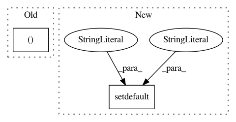

f6cbf325a2e3c52b6da72b55941f343bb7438a57,nnmnkwii/preprocessing/generic.py,,adjast_frame_length,#Any#Any#Any#,322
Before Change
See also:
:func:`nnmnkwii.preprocessing.adjast_frame_lengths`
Tx, D = x.shape
if divisible_by > 1:
rem = Tx % divisible_by
After Change
See also:
:func:`nnmnkwii.preprocessing.adjast_frame_lengths`
kwargs.setdefault("mode", "constant")
assert x.ndim == 2 or x.ndim == 1
Tx = x.shape[0]
In pattern: SUPERPATTERN
Frequency: 3
Non-data size: 2
Instances
Project Name: r9y9/nnmnkwii
Commit Name: f6cbf325a2e3c52b6da72b55941f343bb7438a57
Time: 2018-01-02
Author: zryuichi@gmail.com
File Name: nnmnkwii/preprocessing/generic.py
Class Name:
Method Name: adjast_frame_length
Project Name: nilmtk/nilmtk
Commit Name: bb66ea0993507b10b25d5cca128965bc3c67a966
Time: 2014-12-12
Author: jack-list@xlk.org.uk
File Name: nilmtk/metergroup.py
Class Name: MeterGroup
Method Name: dataframe_of_meters
Project Name: pandas-dev/pandas
Commit Name: 6ff2e7c602123787c3b0061466ab5bb8663eae81
Time: 2021-01-18
Author: twoertwein@users.noreply.github.com
File Name: pandas/_testing/contexts.py
Class Name:
Method Name: ensure_clean